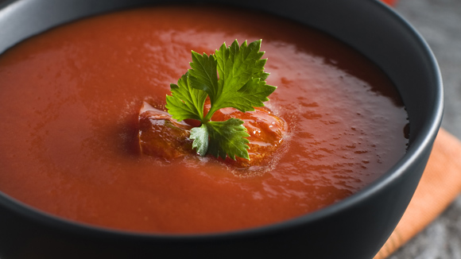
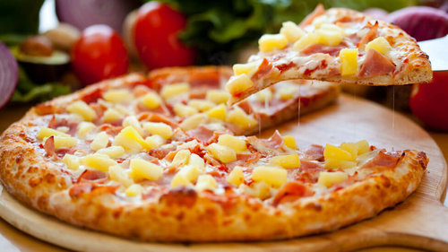

My Favorite Recipes
Soup

Beethoven once said
Only the pure of heart can make a good soup.
Well, here's my attempt at doing just that!
- Step 1
- Step 2
- Step 3
- Enjoy!
Salad

List of ingredients
- Ingredient 1
- Ingredient 2
- Ingredient 3
Who can resist a fresh salad! Here's one of my favorites.
- Step 1
- Step 2
- Step 3
- Enjoy!
Pizza
Pizza,the king of comfort foods. Try this simple, taste sensation.
- Step 1
- Step 2
- Step 3
- Enjoy!